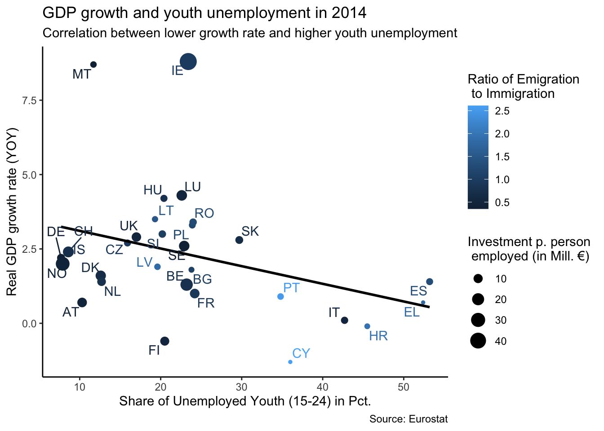

Data Viz: Eurostat Example
Download the script here
Download the data here
Solutions can be downloaded here - but try to solve everything without the solutions first!
1 Info
We practice with the Eurostat data again. However, to spare us the time of datamanagement, now we already have a prepared dataset at hand.
2 Setup
What do we always do first? (We only need the tidyverse)
3 Read and explore the data
Read the data ( eurostat_data.csv) and store them as eurost.
There is only one single data management task for you here: For now, we only want to use the year (denoted by the variable time in the dataset) 2014. Please, filter accordingly.
eurost <-
# filter for the time==2014 You might want to explore the data first. Remember, you can use some of those str(), head(), summary(), table(), quantile(), and View().
4 Reproduce Plots
Reproduce these three plots. Below the graphs you can find some information.
4.1 geom_point

- x = unemp_youth_t
- y = gdp_gr
- color = emigration_t / immigration_t
- size = inv_per_empl
- Use
theme_classic() - You might realize that the label symbols of size are a bit weird as soon as you add the regression line. This is because the function to create the regression line interacts with the size argument within the
ggplot()function. Therefore, as soon as you add the regression function, move the size argument togeom_point. But don’t forget that the size argument has to be put withinaes()!- Here is an important learning: aes() can be passed to either ggplot() or to a specific layer (e.g. geom_). Aesthetics specified to ggplot() are used as defaults for every layer, while aes() passed to a specific layer a used as default for that layer only.
4.2 geom_col

- use theme_economist()
- x = geo_code
- y = unemp_youth_t
- fill = unemp_youth_t
- Play a bit with the width of the bars.
- Crucially, we add points which relate to unemp_workagepop_t. You need to write a new aes() in the point function and assign the color “red”. Outside of the aes() argument, adjust the size of the points to 3.
- Rename the axes accordingly. Note that although the y axis is actually just related to youth unemployment, we simply rename it as Unemployment because the total unemployment (e.g. the points) are within the same scale.
- Furthermore, add this line `+ scale_color_manual(values = c(“red”), labels = c(" "))`. Do you understand what it does?
4.3 geom_hist
Here, we first do some some data management. We reload the data (but save them as eurost2), filter for some countries and the time period 1990-2015. Furthermore, we create two new columns which copy the values of (youth) unemployment ONLY in the year of 2015.
eurost2 <- read_csv2("data/eurostat_data.csv") %>%
filter(geo_code %in% c("DE", "IT", "EL", "ES", "UK"),
time >= 1990,
time <= 2015) %>%
mutate(
unemp_tod = if_else(time == 2015, unemp_workagepop_t, NA_real_),
unemp_youth_tod = if_else(time == 2015, unemp_youth_t, NA_real_)
)We use this data for the plot
- As aesthetic in the principle
ggplot()function, just use x = geo_code - What we are doing then is using two seperate
geom_violinand two seperategeom_pointfunctions- Both violin functions use the argument
alpha = 0.5to increase the transparency of the violin plots - One violin function has
y=unemp_youth_tand the othery = unemp_workagepop_t. Use the appropriate colors - One point function has
y = unemp_todand the othery = unemp_youth_tod. Usecolor = "black", size = 3outside of the aesthetic.
- Both violin functions use the argument
- Use
theme_minimal() - Add this line:
scale_fill_manual(values = c("red", "blue"), labels = c("Total Unemployment", "Youth Unemployment"))
5 New Stuff
In this section, we cover some new functions within ggplot2. However, as the ggplot logic is so straight forward, try to learn these new techniques yourself (nevertheless, there are some hints).
Learning how to find out about stuff in R by yourself is one of the key techniques for smooth coding.
If you have any questions, one of the following might help:
?functionname(and press enter) to retrieve the official documentation- google (make sure to type r somewhere into your query; stackoverflow results are preferable)
- Ask us ;)
All the exercises will use the first plot. To make our lives easier, we safe this plot as main_plot
main_plot <- ggplot(
data = eurost,
mapping = aes(
x = unemp_youth_t,
y = gdp_gr,
color = emigration_t / immigration_t
)
) +
geom_point(aes(size = inv_per_empl)) +
labs(
x = "Share of Unemployed Youth (15-24) in Pct.",
y = "Real GDP growth rate (YOY)",
title = "GDP growth and youth unemployment in 2014",
subtitle = "Correlation between lower growth rate and higher youth unemployment",
caption = "Source: Eurostat",
size = "Investment p. person\n employed (in Mill. €)",
color = "Ratio of Emigration \n to Immigration"
) +
geom_smooth(method = "lm", se = FALSE, color = "black") +
theme_classic()main_plot## `geom_smooth()` using formula 'y ~ x'5.1 Adjusting colors
First of all, the colors of this main_plot are not so nice.
There are hundreds of ways to change the colors of all the components of a ggplot. You might want to check out his page for more information.
Try to replicate this plot:
## `geom_smooth()` using formula 'y ~ x'- Remember, we just saved the first plot as main_plot. So you do not need to rewrite everything from this plot but only ….
- In this case, use the function
scale_color_gradient2()to get the colors.- Use
?scale_color_gradient2()to understand the arguments you need to use to replicate the plot
- Use
5.2 Adding labels to points
We want to have labels with the country codes next to our points. ggplot has a proprietary function for this, but a cleaner and more efficient function comes from the ggrepel package (e.g. install ggrepel).
## `geom_smooth()` using formula 'y ~ x'
Again, use main_plot as the base
The function from ggrepel we want to use is
geom_text_repel. Use geo_code as the label within theaes()argument ofgeom_text_repel.
5.3 Facets and more
You can add a facets (e.g. the same plotting relationship in many windows representing different variables such as different years) with the function +facet_wrap(~FACETS_VARIABLE_NAME). Make facets using our main graph, using location as a facets variable.
## `geom_smooth()` using formula 'y ~ x'- Use location as the facet variable.
6 Interactive Graph
With the plotly package, we can actually build interactive graphs.
The easiest way is to simply use the ggplotly() function and parse a ggplot object to the p argument:
# Download the plotly package:
library(plotly)
ggplotly(p = main_plot)